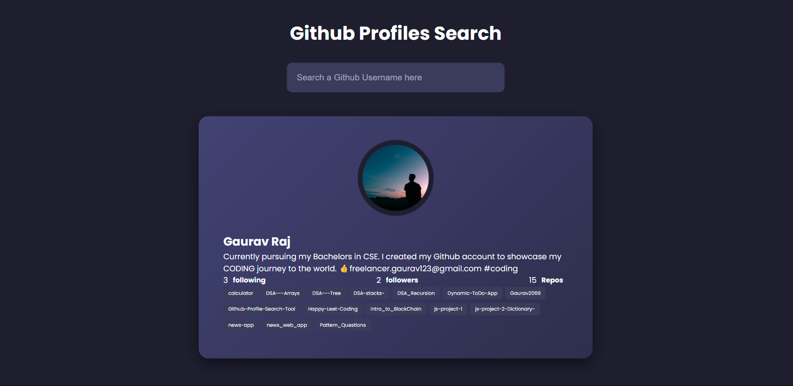
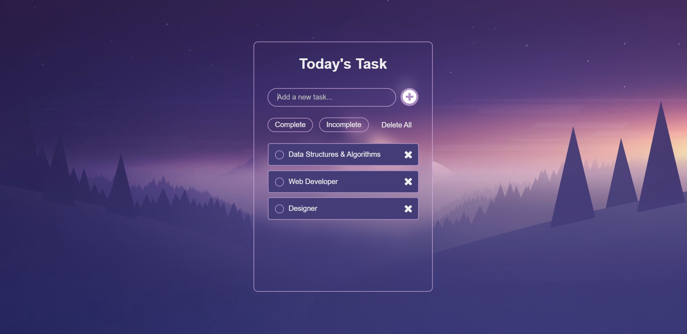
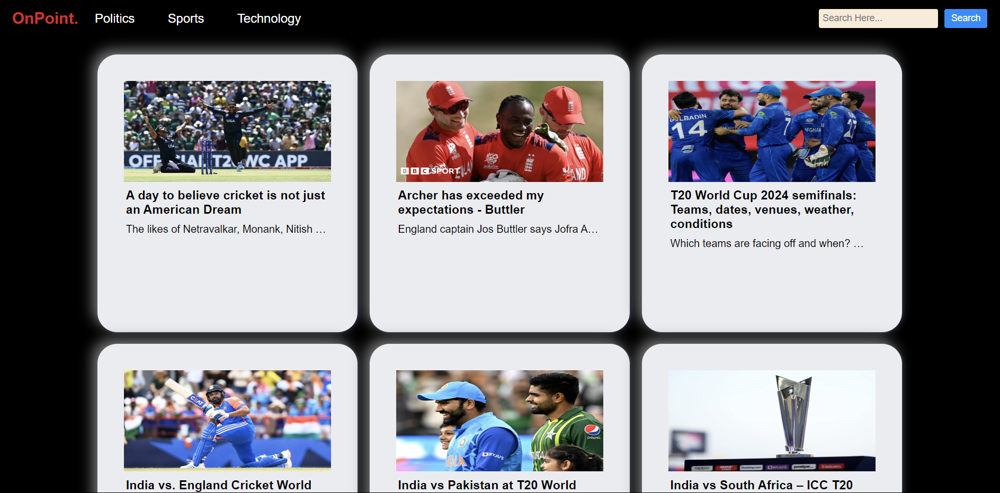
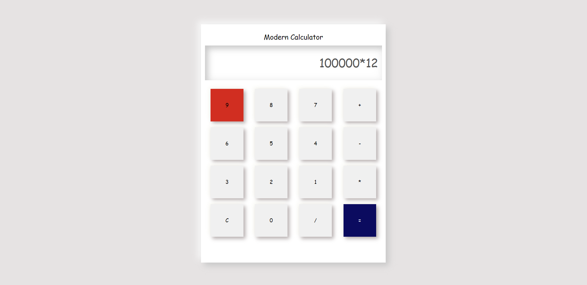

My Projects
Github profile search
A GitHub Profile Search Project is a tool that retrieves information from GitHub user profile. The project involves creating a user-friendly interface and GitHub API to retrieve user’s information.
Technologies Used:- HTML, CSS and JavaScript.
API was used to display the data.
To-do list app
The To-Do app is designed with simplicity and user-friendliness in mind, making task management effortless for everyone. Whether you're managing daily chores or planning a major project, our To-Do app keeps you on track with a seamless and enjoyable user experience.
Technologies Used:- HTML, CSS and JavaScript.
Dynamic Features Include:- ADD or REMOVE Tasks
Dictionary APP
It is a user-friendly tool designed to provide quick and accurate definitions of words. It utilizes an API fetch mechanism to fetch real-time data from a reliable dictionary source. making it an essential companion for students and professionals.

Technologies Used:- HTML, CSS and JavaScript.
Colour Combination:- Webflow
DAILY NEWS WEBSITE - On Point
The Daily News Website is a responsive web application built with HTML, CSS, and JavaScript, offering the latest news across various categories. It features dynamic content and a user-friendly interface to enhance the user experience.
Technologies Used:- HTML, CSS and JavaScript. U.I Design was created in CANVA.
Calculator
The neat and clean design of the calculator ensures that users can effortlessly perform calculations without any hassle. Whether you need to add, subtract, multiply, or divide, this Calculator app provides a seamless experience, making it the perfect tool for everyday use.
Technologies Used:- HTML, CSS and JavaScript.
Features Include:- Add, Substract, Multiply, and Divide